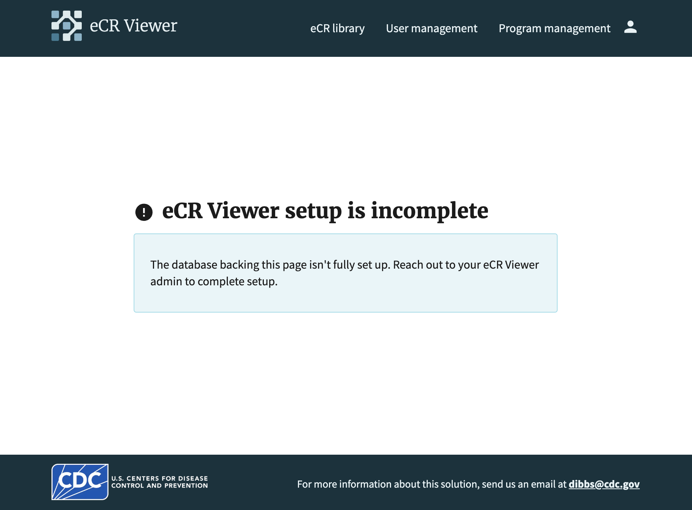

This document guides installers of the DIBBs eCR Viewer through testing needed to verify installation.
After you’ve installed DIBBs services in your jurisdiction, this guide walks you through the steps needed to verify the installation. This will ensure that the system has been properly installed in your environment and that it’s ready for your public health department to interact with.
Please consult the eCR Viewer Setup Guide to verify that your environment variables and infrastructure have been configured correctly.
The following instructions will guide you through this list.
process-ecr endpoint run was successfulMost /ecr-viewer/api/ routes require authentication to be used. The exceptions are public routes such as the health check and authentication routes.
For integrated authentication, the token will be generated using a private key, and validated using the corresponding public key set in the NBS_API_PUB_KEY environment variable. For non-integrated authentication, the token must be generated by your Identity Provider (IDP) service.
To generate the required keys for integrated authentication:
For Windows using PuttyGen:
For MacOS/Linux using ssh-keygen:
ssh-keygen -t rsa -b 4096 -f private_key.pem -N ""
ssh-keygen -y -f private_key.pem > public_key.pub
NBS_API_PUB_KEY environment variable in your deployment configuration (Docker container, Kubernetes, etc.) using the content of your public_key.pub file.Use your private key to generate a JWT token for API requests. The token should be sent on the Authorization header of requests.
Example using Node.js:
const jwt = require("jsonwebtoken");
const fs = require("fs");
const privateKey = fs.readFileSync("private_key.pem");
const payload = {
exp: Math.floor(Date.now() / 1000) + 60 * 60, // 1 hour expiration
iat: Math.floor(Date.now() / 1000),
};
const token = jwt.sign(payload, privateKey, { algorithm: "RS256" });
For non-integrated authentication, tokens must be generated by your IDP service (Azure AD, Entra, or Keycloak) using a service principal. The token will be validated using the authentication provider configured in the environment variables.
To test the installation, we’ll run a series of API requests to the DIBBs services.
{{dibbs-url}} will be used throughout the document to indicate the URL your services are available on — use your own URL instead.
Instructions have been provided for different operating systems, so follow the instructions applicable to your machine.
Here, we’ll verify that the eCR Viewer service is available to receive requests by running the eCR Viewer Health Check request.
Invoke-WebRequest -Uri "https://{{dibbs-url}}/ecr-viewer/api/health-check" -UseBasicParsing
curl https://{{dibbs-url}}/ecr-viewer/api/health-check
You should receive the following response:
{ "status": "OK", "version": {{app version}}, "dependencies": { {{dependency name}}: {{status ("UP" or "DOWN")}} } }
If you are running the NBS-integrated version of the Viewer, you can skip this step.
If you are running the viewer with a metadata database (standalone or dual boot), you will need to run database migrations upon the first install of the application or anytime there is an update to the database schema. If migrations need to be applied, you will see an error when trying to use the viewer.

In order to apply migrations, you will need the migration secret. This can be set to a static value by setting the METADATA_DATABASE_MIGRATION_SECRET, otherwise it will be generated randomly each time the viewer is started. Once generated, it will be logged to the eCR Viewer server logs. Check your container's logs to find this secret - it will be logged as migration_secret=<your secret here>.
$boundary = [guid]::NewGuid().ToString()
$body = (
"--$boundary",
"Content-Disposition: form-data; name=`"migration_secret`"",
"Content-Type: application/text",
"",
"{{ migration-secret }}",
"--$boundary--"
) -join "`r`n"
$headers = @{
"Content-Type" = "multipart/form-data; boundary=$boundary"
}
Invoke-RestMethod -Uri "https://{{ dibbs-url }}/ecr-viewer/api/migrate-db" `
-Method Post -Headers $headers -Body $body
curl {{ dibbs-url }}/ecr-viewer/api/migrate-db --form migration_secret={{ migration-secret }}
Note: This walkthrough focuses on testing with zip files for simplicity, but the process-ecr endpoint also accepts individual eCR XML files, separate eCR and RR files, or inline string content. For more details on all supported formats and additional parameters, see the API Documentation.
Now, we need to verify that an eCR can run through the DIBBs pipeline. Below, you'll need to replace {{path-to-eCR-zip-file}} with the actual link to your sample eCR/RR zip file and {{jwt-token}} with your generated JWT token.
Please ensure that the sample eCR you're using is a zip file, and the eICR and RR files are named as they are coming out of AIMs — CDA_eICR.xml and CDA_RR.xml.
Run the Process eCR request:
$FilePath = '{{ path-to-eCR-zip-file }}'
$URL = 'https://{{ dibbs-url }}/ecr-viewer/api/process-ecr'
$Token = '{{ jwt-token }}'
Function Import-ApiForm {
param(
[Parameter(Mandatory = $true)][String] $URI,
[Parameter(Mandatory = $true)][System.IO.FileSystemInfo] $File,
[Parameter(Mandatory = $true)][String] $ContentType,
[Parameter(Mandatory = $true)][String] $NewName,
[Parameter(Mandatory = $true)][String] $AuthToken
)
BEGIN{
$FormTemplate = @'
--{0}
Content-Disposition: form-data; name="ecr"; filename="{1}"
Content-Type: {2}
{3}
--{0}--
'@
$enc = [System.Text.Encoding]::GetEncoding("iso-8859-1")
}
PROCESS{
$Result = $False
$boundary = [guid]::NewGuid().Guid
$bytes = [System.IO.File]::ReadAllBytes($File.FullName)
$Data = $enc.GetString($bytes)
$body = $FormTemplate -f $boundary, $NewName, $ContentType, $Data
$FormContentType = "multipart/form-data; boundary=$boundary"
$headers = @{
"Authorization" = "Bearer $AuthToken"
}
Try {
$Result = Invoke-RestMethod -Uri $Uri -Method POST -ContentType $FormContentType -Body $body -Headers $headers -DisableKeepAlive
} Catch {
Write-Error $_
}
return $Result
}
END{}
}
$FileInfo = Get-Item $FilePath
Import-ApiForm -URI $URL -File $FileInfo -ContentType "application/zip" -NewName "ecr_zip" -AuthToken $Token
$FilePath = "{{path-to-eCR-zip-file}}"
$Token = "{{jwt-token}}"
$headers = @{
"Authorization" = "Bearer $Token"
}
Invoke-WebRequest -Uri "https://{{ dibbs-url }}/ecr-viewer/api/process-ecr" `
-Method Post `
-UseBasicParsing `
-Form @{ ecr = Get-Item $FilePath } `
-Headers $headers
curl {{ dibbs-url }}/ecr-viewer/api/process-ecr ^
--form ecr=@"{{ path to file }}";type=application/zip ^
--header 'Authorization: Bearer {{jwt-token}}'
curl {{ dibbs-url }}/ecr-viewer/api/process-ecr \
--form 'ecr=@"{{ path to file }}";type=application/zip' \
--header 'Authorization: Bearer {{jwt-token}}'
You should see the following response:
{ "message": "Success. Saved FHIR bundle." }
To confirm that the eCR processed through the DIBBs pipeline correctly, we’ll manually check the output FHIR bundles in blob storage.
Navigate to your cloud provider’s console and find the DIBBs blob storage component. You should see the eCR that was just processed in blob storage.
Take note of the eCR file name {{ecr-id}}.json in blob storage — you'll need it for the next step.
Verify that the eCR Viewer is able to display the eCR that was processed.
To access that eCR, run the following request in a browser:
http://{{dibbs-url}}/ecr-viewer/view-data?id={{ecr-id}}
where {{ecr-id}} should be replaced with the eCR ID that you copied from the last step.
Please note that depending on your authentication settings for the Viewer, this step may not work directly from a browser – you may have to find the eCR in your NBS environment instead, and use the “View eICR Document” button to view. However, even if you hit an authentication error on this page, it means the Viewer is configured correctly.
If you run into any issues during testing, please reach out to the DIBBs team! We want to know if there are changes needed to the core pipeline. You can email us at dibbs@cdc.gov.
Some common errors are noted below.
If your eCR contains invalid data, it will be rejected by the pipeline. You’ll see a message like:
{ "message": "Failed to save FHIR bundle." }
Or:
{ "message": "Internal Server Error" }
More details can typically be found in the server's logs. Generally speaking, you can get around this error by re-running or choosing a different eCR bundle. You’ll also need to make sure your eCRs are named as they are coming out of AIMs — CDA_eICR.xml and CDA_RR.xml.
Congratulations! You’ve completed the verification process for the DIBBs installation.
Please reach to your contact within your public health department and dibbs@cdc.gov to confirm that the installation was successful.